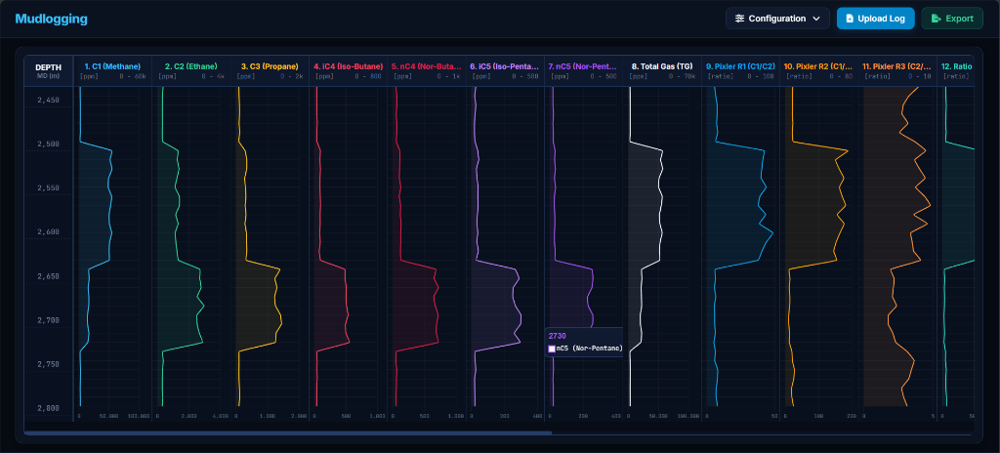
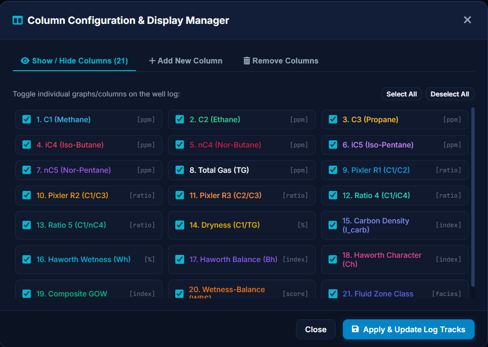
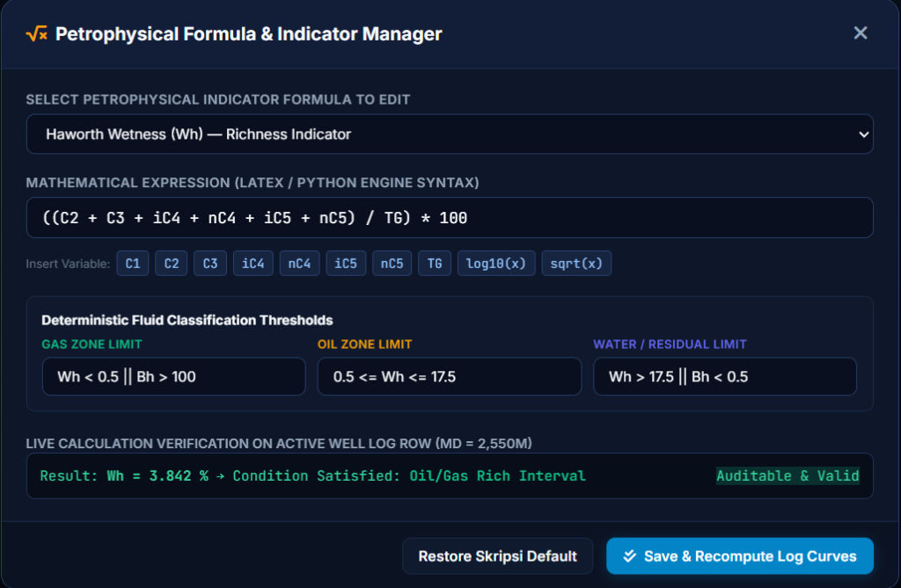

UNIVERSITAS GADJAH MADA
Fakultas Matematika dan Ilmu Pengetahuan Alam • Departemen Ilmu Komputer dan Elektronika
Seminar Proposal / Hasil Skripsi
Ilmu Komputer
Aplikasi Visualisasi Data Gas While Drilling untuk Prediksi Tipe Hidrokarbon Menggunakan Algoritma Deterministik
"Gas While Drilling Data Visualization Application for Hydrocarbon Type Prediction Using Deterministic Algorithms"
Penyusun / Peneliti
Mohammad Azka Khairur Rahman
NIM: 23/511608/PA/21830
Dosen Pembimbing
Dr. Techn. Khabib Mustofa, S.Si., M.Kom.
Dept. Ilmu Komputer dan Elektronika
Tahun / Tanggal
Juni 2026
Yogyakarta, Indonesia
Agenda Presentasi
Garis Besar Pembahasan
01 Latar Belakang & Masalah
Tantangan evaluasi fluida formasi pada pemboran pertama, risiko kapital tinggi, dan kelemahan wireline logging.
02 Tujuan & Manfaat Penelitian
Target pengembangan software pendukung keputusan 21-track dan dampak bagi industri hulu migas.
03 Tinjauan Pustaka & Research Gap
Analisis komparatif software workstation komersial, data plotters, dan kelemahan audit AI Black-Box.
04 Metodologi SDLC 5-Phase
Siklus hidup rekayasa perangkat lunak dari analisis kebutuhan hingga pengujian dan rilis terbuka.
05 Arsitektur & Formulasi Matematis
Struktur 3-layer modular in-memory, 16 rasio petrofisika (Pixler/Haworth), dan majority-vote classification.
06 Implementasi Antarmuka 21-Track
Visualisasi multi-track continuous log, synchronized crosshair, Column Manager, dan Formula Manager.
07 Rencana Pengujian, Timeline & Q&A
Verifikasi matematis, benchmarking throughput latency (≤5.0s), matriks evaluasi, dan jadwal penelitian.
Mohammad Azka Khairur Rahman
2 / 16
Bab I : Pendahuluan
Latar Belakang & Urgensi Penelitian
Risiko Kapital Tinggi
Pemboran satu sumur eksplorasi/lepas pantai membutuhkan biaya puluhan juta dolar. Tim operasi membutuhkan keputusan fluida reservoir secepat mungkin untuk geosteering dan casing seating.
$20M - $80M
Biaya Pemboran Sumur Eksplorasi
Potensi Data GWD
Gas While Drilling (GWD) mengukur fraksi gas hidrokarbon ($C_1 - C_5$) yang terbebaskan saat mata bor menghancurkan batuan formasi. Data ini adalah data paling awal pada pemboran pertama.
C1 s.d. nC5
Fraksi Gas Kromatografi Real-Time
Bottleneck Operasional
GWD selama ini hanya diperlakukan sebagai log monitoring pasif. Penentuan fluida tertunda hingga Wireline Logging (WL) pasca-pemboran, menyebabkan rig standby berhari-hari dan risiko borehole collapse.
3 - 7 Hari
Waktu Tunggu Wireline Logging
Aplikasi Visualisasi Data Gas While Drilling
3 / 16
Bab I : Pendahuluan
Rumusan Masalah & Kesenjangan Penelitian
Keterbatasan Software Eksisting
- Passive Data Plotters: Software seperti WellCAD dan LogPlot hanya menggambar kurva, tanpa otomasi kalkulasi rasio gas dan forecasting fluida.
- Monolithic & Mahal: Software workstation seperti SLB Techlog / Geolog sangat kompleks, lambat dikonfigurasi di wellsite, dan berbiaya lisensi > $20.000–$50.000/tahun.
- Machine Learning Opaque (Black-Box): Bobot neural network tidak dapat diaudit, sehingga melanggar regulasi sertifikasi cadangan SPE PRMS Chapter 4.
Problem: Delayed Decision & Non-Auditable Predictions
Solusi yang Diusulkan (Proposisi Skripsi)
- Automated Multi-Ratio Engine: Menghitung 16+ indikator petrofisika (Pixler, Haworth, GOW, WBS, GOR) secara deterministik dan instan.
- 100% Traceable & Auditable: Persamaan analitis tertutup memenuhi syarat audit SPE/WPC/AAPG/SPEE PRMS.
- Interactive 21-Track Web Dashboard: Dilengkapi dynamic Column Manager dan Formula Manager dengan latensi total < 5.0 detik.
Solution: Real-Time Open-Source Deterministic DSS
Aplikasi Visualisasi Data Gas While Drilling
4 / 16
Bab I : Pendahuluan
Tujuan Penelitian (Research Objectives)
01
Calculation Engine
Mengembangkan engine Python untuk menghitung 16 indikator petrofisika gas dan klasifikasi fluida deterministik (Gas, Oil, Water, No Show) di setiap interval kedalaman.
02
21-Track Web UI
Membangun visualisasi multi-track 21 kolom sinkron dengan kontrol dinamis (Column Configuration Manager & Petrophysical Formula Manager).
03
SOP & Audit PRMS
Membuktikan kepatuhan penuh terhadap standar industri migas (SPE/AAPG, API RP 31A, dan SPE PRMS Chapter 4) melalui logika analitis 100% traceable.
04
Optimasi & Usability
Mengoptimalkan throughput pipeline total ≤ 5.0 detik untuk sumur > 3000m dan mencapai skor usability terstandarisasi $\overline{S} > 68.0/100$.
Aplikasi Visualisasi Data Gas While Drilling
5 / 16
Bab I : Pendahuluan
Manfaat & Dampak Penelitian
Dampak Operasional & Industri Hulu Migas
- Early First-Drilling Fluid Intelligence: Tim geologi operasi mendapatkan informasi fluida lebih awal tanpa menunggu wireline logging berhari-hari.
- Efisiensi Biaya Rig: Mengurangi downtime rig standby dan menghemat jutaan dolar biaya operasional pemboran.
- Eliminasi Barrier Lisensi: Menyediakan alternatif open-source tanpa biaya tahunan workstation $20.000–$50.000/seat.
- Audit Compliance: Menghasilkan laporan evaluasi yang memenuhi standar audit formal SPE PRMS.
Kontribusi Akademik & Pendidikan
- Demokratisasi Komputasi Petrofisika: Memberikan akses perangkat lunak evaluasi formasi modern bagi mahasiswa dan peneliti universitas.
- Peningkatan Pedagogi Geosains: Menjadi media pembelajaran interaktif bagi mahasiswa ilmu komputer dan geologi untuk memahami korelasi fraksi gas dan respon log.
- Reproducible Science: Kode sumber dan pipeline pengujian dirilis secara terbuka di repositori publik.
Aplikasi Visualisasi Data Gas While Drilling
6 / 16
Bab II : Tinjauan Pustaka
Perbandingan Komparatif State-of-the-Art
| Kategori Software / Metode | Contoh Platform | Kelebihan Utama | Keterbatasan Kritis |
|---|---|---|---|
| Enterprise Workstation | SLB Techlog, AspenTech Geolog | Kaya fitur multi-well, rendering ratusan kurva | Sangat lambat disiapkan, lisensi >$20k–$50k, GWD hanya pasif |
| Drafting & Strip Loggers | WellCAD, LogPlot | Simbol litologi bagus, layout siap cetak | Zero built-in calculation, murni drafting grafis |
| Open-Source Scripting | lasio, welly, Matplotlib | Gratis, scriptable dengan Python | Tidak ada GUI terintegrasi, tanpa otomasi multi-rasio GWD |
| Machine Learning Models | ANN, XGBoost, FlexLogNet | Akurasi statistik tinggi pada data historis | Black-Box, gagal audit SPE PRMS, rentan data drift |
| Proposisi Skripsi Ini | Mudlogging Pro (Web DSS) | Automated 16+ ratios, 21 tracks, instan (<5s) | 100% Deterministik, Open-Source, Auditable |
Aplikasi Visualisasi Data Gas While Drilling
7 / 16
Bab III : Metodologi
Metodologi Pengembangan: 5-Phase SDLC
Fase 1
System Requirements
Analisis kebutuhan wellsite geologist, spesifikasi channel gas ($C_1 - C_5, TG$), format LAS/CSV, dan standar SPE PRMS.
Fase 2
Architectural Design
Desain decoupled 3-layer architecture, in-memory processing pipeline, dan skema visualisasi 21-track.
Fase 3
Software Implementation
Implementasi 4 modul inti:
parser.py, engine.py, evaluator.py, dan app.py / Web UI.
Fase 4
System Verification
Unit test formulasi, confusion matrix validasi empiris RFT/MDT, throughput latency benchmark (<5s), dan usability testing.
Fase 5
Release & Packaging
Manajemen dependensi
requirements.txt dan publikasi open-source di GitHub untuk verifikasi publik.
Aplikasi Visualisasi Data Gas While Drilling
8 / 16
Bab III : Metodologi
Diagram Aliran Data & Siklus Pemrosesan (Data Workflow)

Aplikasi Visualisasi Data Gas While Drilling
9 / 16
Bab III : Metodologi
Formulasi Matematis 16 Indikator Petrofisika
Haworth Show Ratios (1985)
Wh = ((C2 + C3 + iC4 + nC4 + iC5 + nC5) / TG) * 100
Bh = (C1 + C2) / (C3 + iC4 + nC4 + iC5 + nC5)
Ch = (iC4 + nC4 + iC5 + nC5) / C3
Pixler Hydrocarbon Ratios (1969)
R1 = C1 / C2 • R2 = C1 / C3 • R3 = C2 / C3
R4 = C1 / iC4 • R5 = C1 / nC4
Indeks Komposit & Dryness
Dryness = (C1 / Derived_TG) * 100%
Ci = TG / (C1 + 2C2 + 3C3 + 4iC4 + 4nC4 + 5iC5 + 5nC5)
GOW = (C3 + iC4 + nC4 + iC5 + nC5) * TG
WBS = ((log10(Bh) - 0.903) / 2.097) - (log10(Wh) / 2)
Majority-Vote Decision Classifier
Mengintegrasikan voting independen dari $W_h, B_h, C_h, \text{Dryness}, R_1, WBS, GOR,$ dan $GOW_{\text{noTG}}$ untuk menentukan zona: Gas Oil Water.
Aplikasi Visualisasi Data Gas While Drilling
10 / 16
Bab III : Implementasi
Implementasi Visualisasi Multi-Track 21 Parameter

Sticky Depth Column
Kolom Measured Depth ($MD$) terkunci di sisi kiri, memberikan acuan kedalaman konstan saat scroll horizontal.
Synchronized Crosshair
Kursor depth tracker sinkron di seluruh 21 grafik secara bersamaan dengan pembacaan nilai presisi.
Fluid Zone Facies Track
Visualisasi blok warna interaktif untuk Gas Pay (hijau), Oil Pay (kuning/oranye), dan Water Sand (biru).
Aplikasi Visualisasi Data Gas While Drilling
11 / 16
Bab III : Implementasi
Fitur: Column Configuration & Display Manager

Show / Hide Columns
Petrofisis dapat mengisolasi parameter tertentu dengan mencentang/menonaktifkan track dengan pembaruan instan.
Add Custom Column
Menambahkan track baru dengan ekspresi formula kustom, unit satuan, skala log/linear, dan palet warna pilihan.
Quick Variable Tokens
Penyisipan variabel cepat ($C_1, C_2, iC_4, TG, W_h, B_h$) memudahkan konstruksi formula matematis.
Aplikasi Visualisasi Data Gas While Drilling
12 / 16
Bab III : Implementasi
Fitur: Petrophysical Formula & Indicator Manager

Formula Editor
Kustomisasi persamaan rasio analitis untuk adaptasi terhadap litologi lokal dan formasi non-standar.
Threshold Cutoff Limits
Pengaturan batas ambang klasifikasi (Gas Limit, Oil Limit, Water Limit) untuk mengkalibrasi akurasi prediksi.
Live Calculation Audit
Verifikasi langsung hasil komputasi pada baris log aktif sebelum perubahan disimpan ke seluruh sumur.
Aplikasi Visualisasi Data Gas While Drilling
13 / 16
Bab III : Evaluasi
Rencana Verifikasi & Evaluasi Kinerja
1. Unit Verification
Uji unit otomatis terhadap tensor benchmark sintetis. Memastikan zero floating-point drift pada seluruh 16 formula rasio.
100% Passed
2. Ground-Truth
Validasi empiris oleh praktisi terhadap data uji sumur nyata (RFT/MDT). Menghitung Accuracy, Precision, Recall, & Macro-$F_1$ Score.
Multi-Class Metric
3. Latency Target
Pengukuran waktu end-to-end ($t_{\text{ingest}} + t_{\text{compute}} + t_{\text{render}}$) dengan target ≤ 5.0 detik untuk profil sumur > 3000m.
~12.96 ms
Target: ≤ 5.0 s
4. Usability Test
Observasi interaktif (Think-Aloud) dan kuesioner terstandarisasi 10 item. Target skor rata-rata: $\overline{S} > 68.0/100$.
> 68.0
Target Usability
Aplikasi Visualisasi Data Gas While Drilling
14 / 16
Bab IV : Jadwal
Jadwal Penelitian & Tahapan Eksekusi
| Tahapan Penelitian (Fase 1 – 8) | Juli | Agustus | September | Oktober | November |
|---|---|---|---|---|---|
| 1. Literature Review & Finalization | Aktif | ||||
| 2. Schema Definition & Ingestion Architecture | Aktif | Aktif | |||
| 3. System Architecture Design | Aktif | Aktif | |||
| 4. Data Parsing & Standardization Module | Aktif | ||||
| 5. Algorithm & Deterministic Classification Logic | Aktif | Aktif | |||
| 6. UI & Multi-Track 21-Parameter Development | Aktif | ||||
| 7. System Testing & Empirical Evaluation | Aktif | ||||
| 8. Writing, Manuscript Revision & Final Submission | Aktif | Final |
Aplikasi Visualisasi Data Gas While Drilling
15 / 16
Seminar Skripsi Ilmu Komputer UGM
Terima Kasih
Sesi Tanya Jawab, Saran & Diskusi Dibuka
Rekapitulasi Kontribusi Penelitian:
- Early Decision Support: Memungkinkan prediksi zona hidrokarbon pada pemboran pertama tanpa delay wireline logging.
- Auditable & SOP Compliant: 100% persamaan matematis analitis sesuai standar SPE PRMS Chapter 4.
- Real-Time & Interactive: Visualisasi 21-track dengan Column & Formula Manager berkecepatan tinggi (< 5s).
Mohammad Azka Khairur Rahman • Pembimbing: Dr. Techn. Khabib Mustofa, S.Si., M.Kom.
Departemen Ilmu Komputer dan Elektronika • FMIPA UGM
16 / 16